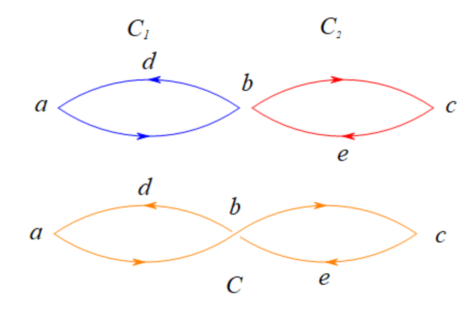

算法导论20 Problems 答案
20-1
a
1
在无向图中进行BFS，如果从节点\(u\)访问到了节点\(v\)，并且这是一条后向边，说明\(v\)在BFS树中是\(u\)的祖先。也就是\(v.d< u.d\)。如果\(v.d=u.d-1\)，那么说明\((u,v)\)我们反向遍历了这条树边，否则就说明了BF树上从\(v\)到\(u\)有两条路径；而\(v.d< u.d-1\)这种情况不会存在。因此后向边不存在。
前向边也不可能存在。如果从节点\(u\)访问到了节点\(v\)，并且这是一条前向边，那么\(v\)是\(u\)的后代，并且\(v\)已经被访问过。然而在BF树中，节点\(u\)的后代只有可能在BF树创立新节点时才会被访问到。这两者是冲突的。
2
如果从已访问节点\(u\)去访问未访问的白色节点\(v\)，那么BF树就会创造一条树边，使得\(v.d=u.d+1\)。这和BF树中对\(d,\pi\)这两个属性的定义是一致的。
3
横向边是除去以上\(3\)种情况的其他边。根据引理20.1和属性\(d\)的计算正确性\(v.d=\delta(s,v)\)，有\(|u.d-v.d|\le 1\)。因此横向边要么满足\(v.d=u.d\)，要么满足\(v.d=u.d+1\)。
b
1
前向边不可能存在。和无向图论证的方式类似，如果\((u,v)\)是一条前向边，那么说明在BF树中\(v\)是\(u\)的后代，在访问\(u\)时，\(v\)已经访问过。但是在BFS中，只有拓展新节点时才会访问到自己的后代。因此前向边不可能存在。
2
和无向图的情形类似。如果从已访问节点\(u\)通过边\((u,v)\)去访问未访问的白色节点\(v\)，那么BF树就会创造一条树边，使得\(v.d=u.d+1\)。如果\(v\)已经被处理，那么\((u,v)\)就不会是树边。
3
当\(v.d\le u.d\)时，这种情况非常普遍。由于\(u,v\)在BF树中没有祖孙关系，并且在访问\(u\)时，\(v\)已经被访问过。
当\(v.d=u.d+1\)时，这和BFS的顺序有关系。此时\(v\)首先被另一个同层的父节点\(u'\)产生，由于\((u',v)\)是树边，那么\((u,v)\)就是横向边。
4
如果\((u,v)\)是一条后向边，这意味着在BF树中\(v\)是\(u\)的祖先。那么BF树中将会有一条有向路径\(v,v_1,v_2,v_3,\dots,v_{m-1},v_m,u\)，并且这一条路径中的\(d\)属性都是按深度增加的，即\(u.d=v_m.d+1=v_{m-1}.d+2=\dots=v_1.d+m=v.d+m+1\)，也就是有\(v.d< u.d\)，我们证明了比题目更强的条件。
20-2
a
令\(r\)是\(G_\pi\)的根节点。
必要性：如果\(r\)在\(G_{\pi}\)只有一个孩子，那么在\(G_{\pi}\)删除\(r\)后，\(G_{\pi}\)剩下的\(|V|-1\)个节点之间仍然是连通的，这说明图\(G\)删去\(r\)后也是连通的。因此，只有\(r\)有至少\(2\)个孩子，\(r\)才是割点。
充分性：由于\(r\)是割点，因此\(G\)中存在两个点\(u,v\)，它们之间的所有路径都是经过\(r\)的。如果删除了这个节点，\(u\)和\(v\)不能相互可达。那么令从\(u\)到\(v\)的一条路径为\((u,\dots,a,r,b,\dots,v)\)。如果\(a=b\)，那么删去\(r\)后，将会使得\(u\)到\(v\)仍然可达，因为有路径\((u,\dots,a,\dots,v)\)，这不符合\(r\)是割点，因此\(a\neq b\)。那么也就是说，从\(a\)不能不经过\(r\)才能到达\(b\)。因此构造DF树时，以\(r,a\)的顺序开始进行遍历，不通过\(r\)并不能访问\(b\)。因此\(G_\pi\)中的\(r\)至少有两个不同的子节点\(a,b\)。
b
必要性：使用反证法证明。如果对于所有\(v\)的后代\(s\)，都存在从\(s\)的某个后代\(s'\)指向\(v\)的真祖先\(v'\)的后向边\(e'=(s',v')\)，那么去掉节点\(s\)后，所有的\(e'\)边都将会连通\(s\)所在的连通块和图\(G\)的主干连通块（也就是\(v'\)所在的连通块），因此\(v\)节点被删去后，并不影响整个图的连通性，此时\(v\)不是割点，引出矛盾。
充分性：如果\(v\)是割点，那么对于子树\(s\)中的某个\(u\)，与非\(s\)子树中的某个节点\(v\)之间的所有路径都需要经过\(r\)。去除\(r\)后，那么\(u,v\)不互通。因此子树\(u\)中的所有节点也不可能和\(v\)的真祖先有任何边，否则会导致去除\(v\)后的图仍然连通。
c
对于一个节点\(u\)，求它的\(low\)属性可以从其子节点转移而来（而不必直接枚举\(u\)的所有子节点。因此，题中对\(u.low\)的计算可以进一步修改成如下形式：
\(u.low=\min \left \{\begin{aligned} &u.d\\ &v.d :&(u,v) \text{ is a back edge of }v\\ &v.low : &(u,v) \text{ is a tree edge of }v\\ \end{aligned}\right.\)
计算\(low\)属性的算法由程序DFS-GEN-LOW-U给出，它由DFS改造而来，并且没有枚举图中的所有节点，因此时间复杂度为\(O(E)\)。
1 | DFS-GEN-LOW-U(G) |
d
- 根据题目20-2-a的结论，根节点\(r\)是割点当且仅当\(r\)在\(G_\pi\)中有至少两个儿子。
- 根据题目20-2-b的结论和20-2-c计算\(low\)属性的过程，非根节点\(u\)是割点当且仅当\(u.low=u.d\)，因为后代的所有节点没有后向边指向\(u\)的真祖先，也就是满足比\(u.d\)更小的节点。
因此通过修改算法DFS-GEN-LOW-U，我们可以得到一个获得所有割点的程序GEN-ARTICULATION-POINTS，并且其时间复杂度为\(O(E)\)。
1 | GEN-ARTICULATION-POINTS(G) |
e
充分性：如果\((u,v)\in E\)是\(G\)的桥，那么\((u,v)\)之间有且只有一条简单通路。而任意一个简单回路中的任意两点间至少有两条不同简单通路，因此桥\((u,v)\)不属于\(G\)中的任何简单回路。
必要性：如果\((u,v)\)属于某条简单回路\((u,v,a,\dots ,b,u)\)，那么去除边\((u,v)\)后，\((u,v)\)之间依然有简单通路\((v,a,\dots,b,u)\)，这说明\(u\)和\(v\)之间仍然是连通的，这与桥的定义矛盾。
f
根据题目20-2-e的结论和20-2-c计算\(low\)属性的过程，边\((u,v)\)是桥当且仅当\(u.d<v.low\)，因为\((u,v)\)不属于任意一个简单回路，否则\(v\)可以和\(G_\pi\)中非\(u\)子树的一部分有另外一条通路，导致\(u.d\ge v.low\)。
和题目20-2-d类似，因此通过修改算法DFS-GEN-LOW-U，我们可以得到一个获得所有桥的程序GEN-BRIDGES，并且其时间复杂度为\(O(E)\)。需要注意的是，只有树边才有可能是桥。
1 | GEN-BRIDGES(G) |
g
在无向图中，每一个桥都连接着两条不同的双连通分量，那么我们需要证明其它边都是属于某个单一的双连通分量中。我们使用反证法来证明两个不同的双连通分量\(C_1,C_2\)没有公共边。假设\(C_1\)和\(C_2\)之间有一条公共边\((u,v)\)。那么\(C_1\)中必定会有一条边\((a,b)\)和\((u,v)\)构成环，即\((a,b,u_1,u_2\dots u_k,u,v,v_{k+1},v_{k+2},\dots,v_m,a)\)，同样的，\(C_2\)中也会有一条边\((x,y)\)和\((u,v)\)构成环，即\((x,y,v_1,v_2\dots v_{k'},u,v,v_{k'+1},v_{k'+2},\dots,v_m',x)\)。将这两个环合并，得到一个新环\((a,b,u_1,u_2,\dots,v,v_{k'},v_{k'-1},\dots,v_1,y,x,v_{m'},v_{m'-1},\dots,v,\dots a)\)，这说明\(C_1\)和\(C_2\)属于同一个双连通分量，和原结论矛盾。
因此，所有桥将\(E\)中的所有非桥边进行了一个划分，每个非桥边属于某一个双连通分量。
h
我们首先把图中\(G\)中的所有桥都删除，得到新图\(G'\)，那么\(G'\)的每一个连通块内部所连接的边在图\(G\)中都属于一个双连通分量。因此，我们可以考虑禁止访问图\(G\)中的所有桥，并且遍历\(G\)中的所有其它边，从而保证\(G'\)中的连通块和\(G\)中的双连通分量是一致的。
1 | GEN-BCC(G) |
20-3
a
充分性：由于\(G\)有一条欧拉回路\(C\)，因此在\(C\)中，当有一条入边进入节点\(v\)，总有一条出边离开节点\(v\)（重复经过节点\(v\)的边是不同的）。由于这些边恰好包含了\(E\)中所有的边各一次，只要\(v\)在\(C\)上出现了\(k_v\)次，那么就有\(k_v\)条不同的入边，\(k_v\)条不同的出边。因此对于\(\forall v\in V,\text{in-degree}(v)=\text{out-degree}(v)=k_v\)均成立。
必要性：对于任意一条从\(s\)出发的一条路径\(P\)，它必定能回到\(s\)，使用反证法证明这个结论。如果从\(s\)出发存在一条路径它不能回到\(s\)，也就是说，有一条路径\(P'\)是\(s\rightarrow v_1\rightarrow v_2 \rightarrow\dots\rightarrow v_k\)，并且\(v_k\neq s\)，并且从\(v_k\)之后所有已经没有出边可走。那么令\(v=v_k\)，统计路径\(P'\)得到\(v\)的出现次数为\(k\)，那么可以知道\(v\)的出度为\(k-1\)（因为已经没有边走出来了），而\(v\)的入度至少为\(k\)，这和\(\text{in-degree}(v)=\text{out-degree}(v)\)是矛盾的，因此\(P\)必定是一条回路。那么，接下来我们找出\(G\)的其中一条回路\(C_1\)，那么如果\(C_1\)是一条欧拉回路，那么完成；否则，去除\(C_1\)中的所有边，入度和出度相等的性质仍然保持不变，由于\(G\)是强连通图，那么可以找到另一条和\(C_1\)点相交，边不相交的回路\(C_2\)，并且将交点一处整合成一条回路\(C\)（如下图所示），直到所有的边都已经被使用。

如图所示，我们已经找到了两个环\(C_1:b\rightarrow d\rightarrow a\rightarrow b\)和\(C_2: b\rightarrow e\rightarrow c\rightarrow b\)，那么我们可以整合成回路\(C:b\rightarrow d\rightarrow a\rightarrow b \rightarrow c\rightarrow e\rightarrow b\)。
b
构造欧拉回路的算法由程序EULER-CYCLE给出。由于EULER-CYCLE-DFS每遍历一条边后便会进行删除，并且没有对图中所有节点进行遍历，因此其时间复杂度为\(O(E)\)。
这个算法的基本思想是，如果当前节点没有出路，那么说明这个节点是当前欧拉路径的终点，否则说明这个节点仍然不会是终点，继续查找之后的路径。
最终，搜索结果的逆序是其中一条欧拉回路。
1 | EULER-CYCLE-DFS(G, A, u) |
20-4
由于\(R(u)\)是表示在\(G\)中从\(u\)起可以到达的节点，那么也可以知道，\(R(u)\)是\(G^T\)中可达节点\(u\)的所有节点。
为了避免循环依赖，我们首先求出\(G^T\)的分量图\((G^T)^{SCC}\)，那么就可以对\((G^T)^{SCC}\)进行基于BFS的拓扑排序，在这个过程中，所有节点的\(L\)值都能在路径上向后传递，而在这个过程中，我们只需要传递最小值即可。对\((G^T)^{SCC}\)处理完成后，我们再将求得的结果映射回原来的图\(G^T\)上的每个节点即可。
算法由GEN-REACHABILITY给出，由于其两个重要步骤的时间复杂度均为\(O(V+E)\)，因此其时间复杂度同样为\(O(V+E)\)。
1 | // 每个节点u将会有一个属性min，代表答案。 |
20-5
本题似乎和图论并没有太大的关系，仅仅考察均摊分析的知识。题目中给定的平面图仅仅是说明了保证整个过程中满足\(|E|<3|V|\)。
1 | // 假设count是一个全局变量，初始化为0，用于记录INSERT的调用次数，从而标记每个节点的进入时间。 |
使用核算法来分析这个过程的时间。对于每个INSERT操作，我们支付\(4\)美元，其中\(1\)美元用于对插入节点对操作，并且预支\(3\)美元用于边的增添进行操作；neighbors数组每个元素都将会使用预支的\(1\)美元完成对这一条边的邻居更新操作。对于每个NEWEST-NEIGHBOR，只需要花费\(1\)美元来查询当前节点的最新邻居。
根据平面图的性质\(|E|<3|V|\)可知，预支的费用是足够的。由于每次操作实际花费都不会超过\(4\)美元，因此可以知道INSERT和NEWEST-NEIGHBOR的平均时间复杂度为\(O(1)\)。